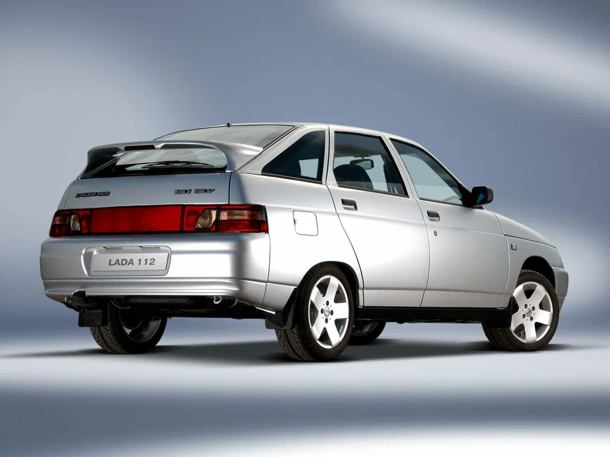

ВАЗ 2112 - Обзор модели
ВАЗ 2112 – это компактный хэтчбек, выпускавшийся Волжским автомобильным заводом с 1999 по 2008 год. Он является глубокой модернизацией ВАЗ 2110 и отличается улучшенной динамикой и управляемостью.
ВАЗ 2112 – это компактный хэтчбек, выпускавшийся Волжским автомобильным заводом с 1999 по 2008 год. Он является глубокой модернизацией ВАЗ 2110 и отличается улучшенной динамикой и управляемостью.